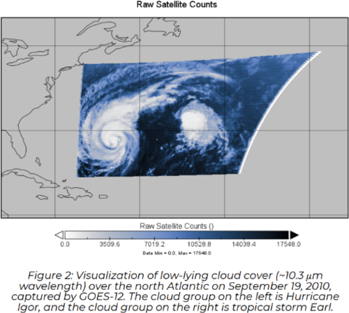

Welcome!
Welcome to my website! This is my portfolio website and here you can see some more information about my research and other things that I am working on. Below is some information regarding my project and the inspiration behind it. At the bottom you can see all of the references that were used if you are interested. Feel free to contact me through the form at the bottom of the page or connect with me at LinkedIn!
The Inspiration
This project was inspired by my previous research as part of the Governor's STEM Scholars Program of New Jersey. The project, entitled “High-Resolution Analysis of Cloud-Radiation Feedback Systems During Hurricanes,” aimed to correlate hurricane systems to albedo through the use of data from the GOES satellites during popular hurricane systems [Karl (2004), Bill (2009), Igor (2010), Sean (2011), and Sandy (2012)]
Below are examples of the hurricane systems and how they were visualized for the experiment:

Once we were able to view the actual hurricanes, we took CERES satellite data at the same range of latitudes and longitudes to visualize a possible correlation between albedo and cloud cover.
As seen by the shocking similarity between the albedo and cloud cover data during Hurricanes Igor and Earl, we preformed a superimposed epoc analysis to quantify the two data sets on a graph.
As both the visual and graphical representation suggest, there is a correlation between cloud cover and albedo, with implications on climate change science. You can view the full paper here:
Here is the paper:
The Project
This project was inspired by this research but aimed to take the data analysis to the physical world and examine a separate avenue of research in the physical world. This experiment aimed to quantify the effect of a difference in surface temperature on albedo and explore different avenues of comparison and reasoning behind the effect. As denoted by the data, an increase in surface temperature resulted in an increase of albedo for a majority of materials, besides glass. This difference can be attributed to the material composition of the different objects and how they are affected by a change in temperature. Temperature changes can result in the shrinking or expansion of a material and thus change the way light interacts with it, changing its index of refraction and thus affecting the amount of energy that gets reflected back into the air (the original medium).

There were some additional considerations that needed to be taken into consideration when conducting this experiment: cost and practicality. In reality, the machines that are capable of taking accurate albedo readings are only present in satellites and state-of-the-art laboratories, a hurdle that had to be crossed when constructing this experiment. By using a light box with a black insert and angularly controlled placement of light sensors and lasers, I was able to recreate this observation with easier-to-acquire materials. Although this is true, nothing can compare to industry-level lasers, light sensors, and precision technologies, which make up the majority of errors and irregularities present within the data. When considering the practicality of this experiment, it was important to choose materials that are widely used and would be useful to understand from a climate change perspective. For these reasons, I choose concrete, clay, and wood as they are used widely around the world and as humans continue their expansion, the presence of these materials on the surface will only get more ubiquitous. For future experimentation, however, I would like to test more natural materials to get a sense of nature’s response to a change in temperatures (e.g. dirt, grass, wet dirt, leaves, etc.).


References
- https://ieeexplore.ieee.org/document/477526
- https://personal.math.ubc.ca/~cass/courses/m309-01a/chu/Fundamentals/snell.htm
- http://www1.udel.edu/chem/sneal/sln_tchng/CHEM620/CHEM620/Chi_4._Light_at_Interfaces.html
- https://scied.ucar.edu/learning-zone/how-climate-works/albedo-and-climate
- https://mynasadata.larc.nasa.gov/mini-lessonactivity/what-albedo
- https://mynasadata.larc.nasa.gov/basic-page/changing-albedo-values
- https://www.ncbi.nlm.nih.gov/pmc/articles/PMC6926063/
- https://doi.org/10.1073/pnas.95.22.12753
- https://doi.org/10.1029/2002GL016098
Contact me üëã
I am currently focusing on physics-based work, though I am open to anything!
Get In Touch